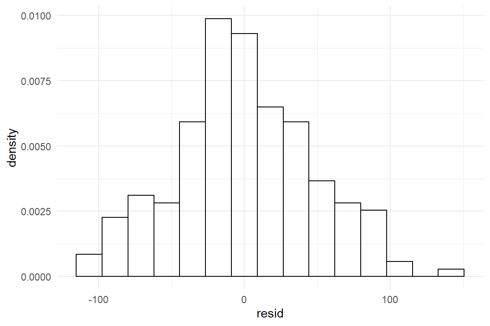
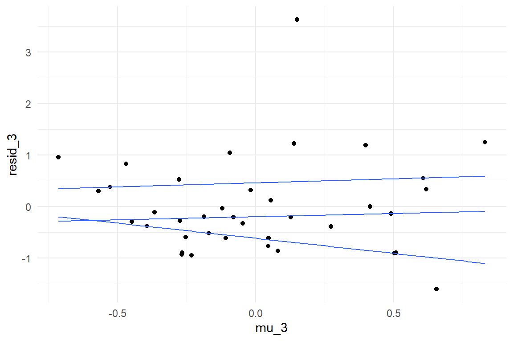

7 Working with models
In chapters 4 and 5, we have seen a marvelous variety of models spawning from just two basic principles, linear combination of multiple effects and Gaussian distribution. Chapter 6 further expanded the variety of models, letting us choose response distributions that sit snug. This chapter, is dedicated to methods that assess how snug a model is.
We begin with model criticsm 7.1, where we examine how well one model fits data, we have gathered in the past. In section 7.2 model selection methods are introduces, which help decide which of several models performs better in the future, by providing the most accurate forecasts.
With linear models we can combine and recombine any set of predictors in many ways. We saw examples, where the more simple of two model seemed to work better, but often it was the more complex conditional effects model that was closer to the data. We will use graphical methods to assess goodness-of-fit, which helps to scrutinize the structural part of linear models. The random part of linear models is fixed, in that errors follows Gaussian distribution, with a constant variance. Checking these assumptions is based on residual analysis. That being said, the section on model criticism introduces techniques that only apply to Gaussian linear models 4, making it a good follow-up for readers who have just worked through that chapter.
Everyone who is already using multi-level models 5 and Generalized Linear Models 6 might want to step right into model selection 7.2, where a more formal approach is presented to compare different models. In contrast to the graphical methods, introduced in @model-criticism, it is applicable for a wider range of models, even wider than the models covered by this book. The problem of comparing multiple models and selecting the fittest first rises the question of what “fittest” actually means and I will settle on the principle of forecasting accuracy. Methods to approximate predictive accuracy are demonstrated and we will see how pruning unnecessary parameters can improve a model. Finally, we will see how model comparison can be used by experimentalists, to test whether a hypotheses is solid.
7.1 Model criticism
For a start, I would like to contrast the overall approach of model criticism to the workflow frequently encountered in classic statistics. Boldly speaking, classicically trained researchers often assume that the “assumptions of ANOVA” need to be checked beforehand. Often a process called assumptions checking is carried out before the researcher actually dares to hit the button labelled as RUN ANOVA. As we will see in this section, the order of actions is just the other way round. The straight-forward way to check the integrity of a model is to examine the fitted model and find its flaws, which is called model criticism. Another symptom of classic assumption checking is the batteries of arcane non-parametric tests that is often carried out. This practice has long been criticized in the statistical literature for its logical flaws and practical limitations. Here, I will fully abandon hypothesis tests for model criticism and demonstrate graphical methods, which are based on two additional types of estimates we can extract from linear models (next to coefficients):
- with residuals we test the assumptions on the shape of randomness
- with fitted responses we check the structural part of the model
7.1.1 Residual analysis
So far, it seems, linear models equip us well for a vast variety of research situations. We can produce continuous and factorial models, account for saturation effects, discover conditional effects and even do the weirdest curved forms. just by the magic of combining linear coefficients. However, the random term stoically stayed the same every time, that it often wasn’t worth mentioning:
\[y_i \sim N(\mu_i, \sigma_\epsilon)\]
In words, the randomness term says: observed values \(y_i\) are drawn from a Gaussian distribution located at fitted response \(\mu_i\), having a fixed standard deviation \(\sigma_\epsilon\). In the notation displayed above, there are indeed as many distributions as there are observed values (due the subscript in \(\mu_i\)). It appears impossible to evaluate not just one distribution, but this many. However, an equivalent notation is routinely used for linear models, that specifies just one residual distribution. For the LRM that is:
\[ \mu_i = \beta_0 + \beta_1x_1\\ y_i = \mu_i + \epsilon_i\\ \epsilon_i \sim \textrm{Gaus}(0, \sigma_\epsilon) \]
In this notation, observed values \(y_i\) are decomposed into predicted values and individual residuals \(\epsilon_i\). These are frequently called errors, hence the greek symbol \(\epsilon\). The standard deviation of residuals \(\sigma_\epsilon\) is commonly called the standard error. The random pattern of the model can now be expressed as a single Gaussian distribution. The reason why I do not use this notation routinely, is that it only works for linear models, but not for models with other random patterns. More specifically, Generalized Linear Models 6 cannot be specified that way. But, for the purpose of residual analysis, it appears more intuitive.
In the previous section we have seen how to extract fitted responses \(\mu_i\) from estimated models. With fitted responses, we evaluate the structural part of the model, the linear connection of coefficients, which practically always carry the research question. to the main objectives of the research. Residual analysis looks at the pattern of randomness, which the classic linear notation defines as Gaussian distributed with constant variance.
\[ \epsilon_i \sim \textrm{Gaus}(0, \sigma_\epsilon) \]
As we have seen in 3.4.2, Gaussian distributions are one pattern of randomness among many and this choice may therefore be appropriate, or not. As a heuristic, if observed values are located rather in the middle of the possible range of measurement (and avoid the edges), Gaussian distributions work well. But, like linearity is compromised by saturation, a distribution is affected when squeezed against a hard boundary, as has been discussed in 6.1.
Like with fitted responses, we will use graphical methods, to assess these two assumptions. When either one is violated, the validity of the model is compromised, although maybe not as much as a linear regression model is compromised curved associations like the Unbcanny Valley effect. It is noteworthy at this point, that these two assumptions severely limit what you may actually do with linear models. In some cases, the these assumptions are met well enough, but in many data sets they are visibly violated. Luckily, the linear model with a Gaussian term has been superceded by a class of models that give us more choice from patterns of random ness and let’s accomodate pattern of randomness as it is. I may go as far as saying: some readers can skip this part and jump right to chapter ??.
7.1.1.1 Gaussian residual distribution
The first assumption of randomness underlying the linear model simply is that the distribution follows a Gaussian distribution. Visually, Gaussian distributions is characterized by:
- one curved peak (unimodality)
- from which density smoothly declines towards both ends (smoothness)
- at same rates (symmetry)
For a rough evaluation of this assumption, it suffices to extract the residuals from the model at hand and plot it as a distribution. The residuals command returns a vector of residual values, exactly one per observation. With the vector of residuals at hand, we can evaluate this assumption by comparing the residual distribution to its theoretically expected form, a perfect bell curve. The following command chain extracts the residuals from the model and pipes them into the ggplot engine to create a histogram. With stat_function an overlay is created with the theoretical Gaussian distribution, which is centered at zero. The standard error \(\sigma_\epsilon\) has been estimated alongside the coefficients and is extracted using the function clu.
tibble(resid = residuals(M_age_shft)) %>%
ggplot(aes(x = resid)) +
geom_histogram(aes(y = ..density..), bins = 15) +
stat_function(fun = dnorm,
args = c(mean = 0,
sd = clu(M_age_shft, type = "disp")$center),
colour = "red")
The match of residual distribution with the theoretical distribution is not perfect, but overall this model seems to sufficiently satisfy the normality assumption. To give a counter example, we estimate the same model using the outcome variable returns, which captures the number of times a participant had (desparately) returned to the homepage.
| parameter | type | fixef | center | lower | upper |
|---|---|---|---|---|---|
| Intercept | fixef | Intercept | 2.564 | 2.02 | 3.113 |
| age_shft | fixef | age_shft | -0.004 | -0.02 | 0.012 |
| sigma_resid | disp | NA | 1.872 | 1.70 | 2.064 |
We now graphically compare the distribution of estimated residuals against a perfect Gaussian distribution with the same standard error. The first chain in teh code extracts the center estimate from the table of estimates.
C_age_rtrn_sd <-
T_age_rtrn %>%
filter(type == "disp") %>%
select(center) %>%
as.numeric()
tibble(resid = residuals(M_age_rtrn)) %>%
ggplot(aes(x = resid)) +
geom_histogram(aes(y = ..density..), bins = 10) +
stat_function(fun = dnorm,
args = c(mean = 0,
sd = C_age_rtrn_sd),
colour = "red") +
xlim(-5, 5)
The estimation produces the usual coefficients, as well as a standard error. However, the residuals do not even remotely resemble the theoretical curve. While it is unimodal, it appears rather asymmetric, with a steep rise to the left and a long tail to the right. That is a typical outcome when count measures get too close to the left boundary. How about unimodality? We have not discussed any multimodal theoretical distributions in 3.4.2, but one has been displayed in 2.1.3. In brief, a bimodal residual distribution can arise, when two groups exist in the data, which lay far apart. The following code illustrates the situation by simulating a simple data set with two groups, that is fed into a GMM.
set.seed(42)
D_bimod <-
bind_rows(
tibble(Group = "A", y = rnorm(50, 4, 1)),
tibble(Group = "B", y = rnorm(50, 8, 1))
)
These two deviations from Gaussian distribution have very different causes: asymmetry is caused by scales with boundaries. This is an often arising situation and it is gracefully solved by Generalized Linear Models 6. This is a family of models, where each member covers a certain type of measurement scale. In the above example, Poisson regression, applies, taking care of count measures. Multimodality is caused by heterogeneous groups in the data, like experimental conditions, design or type of user. For a grouping structure to cause distinguished multimodality, differences between groups have to be pronounced in relation to the standard error. It is often the case, that these variables are controlled conditions, such as in an AB test. It is also quite likely that strong grouping structures can be thought of beforehand and be recorded. For example, in usability tests with diverse user samples, it almost comes natural to distinguish between users who have used the design before and those who did not. If the grouping variable is recorded, the solution is group comparison models 4.3.1, already introduced.
Visual assessment of symmetry and unimodality is simple and effective in many cases. But, Gaussian distributions are not the only ones to have these properties. At least logistic distributions and t distributions have these, too, with subtle differences in curvature. Gaussian and t distributions differ in how quickly probability drops in the tails. Gaussian distributions drop much faster, meaning that extreme events are practically impossible. With t-distributions, extreme values drop in probability, too, but the possibility of catastrophies (or wonders) stays substantial for a long time.
Provided one has a small abundance of data, quantile-quantile (qq) plots can be used to evaluate subtle deviations in curvature (and symmetry and unimodality). In qq plots, the observed and theoretical distributions are both flattened and put against each other. This is a powerful and concise method, but it is a bit hard to grasp. The following code illustrates the construction of a qq-plot that compares GMM residuals of a t-distributed measure against the Gaussian distribution. We simulate t-distributed data, run a GMM and extract residuals, as well as the standard error \(\sigma_\epsilon\).
We obtain the following residual and theoretical distributions. It is approximately symmetric and unimodal, but the curvature seems to be a bit off.
D_t <- mutate(D_t, resid = residuals(M_t))
C_sigma <- rstanarm::sigma(M_t)
D_t %>%
ggplot(aes(x = resid)) +
geom_histogram(aes(y = ..density..)) +
stat_function(fun = dnorm,
args = c(mean = 0,
sd = C_sigma),
colour = "red")
The next step is where the two curves get flattened. First, we compute a sequence of quantiles with fixed steps, say 1%, 2%, … 99%%. Finally, theoretical and observed quantiles are fed into a scatterplot.
D_QQ <- tibble(step = 0:100/100,
quant_smpl = quantile(D_t$resid, step),
quant_theo = qnorm(step, 0, C_sigma))
D_QQ %>%
ggplot(aes(x = quant_theo, y = quant_smpl)) +
geom_point() +
geom_abline(slope = 1, intercept = 0, col = "red")
In the ideal case, they match perfectly and the quantiles are on a straight line. Instead, we see a rotated sigmoid shape and this is typical for fat-tailed distributions such as t. The shape is symmetric with turning points at around -4 and 4 on the theoretical scale. In the middle part the relation is almost linear, however, not matching a 1-by-1. The t distribution loses probability mass rather quickly when moving from the center to the turning points. From these points on the theoretical quantiles start to lag behind. The lower and upper 1% sampled quantiles go to much more extreme values, ranging from -10 to almost 20, whereas the Gaussian distribution renders such events practically impossible. Generally, a rotated sigmoid shape is typical for fat tailed distributions. The problem of misusing a Gaussian distribution is that it dramatically underestimates extreme events. Have you ever asked yourself, why in the 1990s, the risk for a nuclear meltdown were estimated to be one in 10.000 years, in face of two such tragic events in the past 40 years? Rumor tells, researchers used the Gaussian distribution for the risk models, under-estimating the risk of extreme events.
The ggplot engine provides an easy to use geometry for qqlots, which lets us further explore deviant patterns. Variables with t distribution take an inverse-sigmoid shape due to their fat tails.
D_t %>%
ggplot(aes(sample = resid)) +
geom_qq(distribution = qnorm) +
geom_abline(intercept = 0, slope = 1, col = "red")
Once mastered, the qq-plot is the swiss knife of Normality check. Next to the subtleties, we can also easily discover deviations from symmetry. This is how the residuals of the returns-to-homepage model look like:
tibble(resid = residuals(BrowsingAB$M_age_rtrn)) %>%
ggplot(aes(sample = resid)) +
geom_qq(distribution = qnorm) +
geom_abline(intercept = 0, slope = 1, col = "red")To the left, extreme values have a lower probability than predicted by the Gaussian distribution, but the right tail is much fatter, once again. We also see how residuals are clumped, which is characteristic for discrete (as compared to continuous) outcome measures. This is poor behaviour of the model and, generally, when a model is severely mis-specified, neither predictions nor estimates, nor certainty statements can be fully trusted. A model that frequently fits in case of count numbers is Poisson regression, which will enter the stage in chapter ??.
7.1.1.2 Constant variance
In ??, we assessed one assumption that underlies all linear models, namely Gaussian distribution of residuals. The second assumption underlying the linear model random (or residual) is that residual variance is constant throughout the whole range. In both classic and modern notation, this stems from the fact that there is just a single \(\sigma_\epsilon\) defined. However large \(\mu_i\) is, the dispersion of residuals is not supposed to change.
Before we dive into the matter of checking the assumption, let’s do a brief reality check using common sense:
Consider people’s daily commute to work. Suppose you ask a few persons you know: “What is your typical way to work and what is the longest and the shortest duration you remember?”. In statistical terms, you are asking for a center estimate and (informal) error dispersion. Is it plausible that a person with typical travel time of 5 minutes experienced the same variation as another person with a typical time of 50 minutes?
Consider an experiment to assess a typing training. Is it plausible that the dispersion of typing errors before the training is the same as after the training?
In both cases, we would rather not expect constant variance and it is actually quite difficult to think of a process, where a strong change in average performance is not associated with a change in dispersion. The constant variance assumption, like the normality assumption is a usual suspect when approximating with linear models. We will come back to that down below.
In a similar way, we can ask: can it be taken for granted that residual variance is constant when comparing two or more groups? Would you blindly assume that two rather different designs produce the same amount of spread around the average? It may be so, but one can easily think of reasons, why this might be different. We check the situation in the CGM of the BrowsingAB study. Do both design conditions have the same residual variance? Again, we extract the residuals, add them to the data set and produce a boxplot by Design condition:
BAB1 %>%
mutate(resid_CGM = residuals(M_CGM)) %>%
ggplot(aes(x = Design, y = resid_CGM)) +
geom_boxplot()
Both sets of residuals are reasonably symmetric, but it appears that design B produces more widely spread residuals. Something in the design causes individual performance to vary stronger from the population mean. The cause of this effect has been disclosed in 4.5.2. (In essence, design B is rather efficient to use for younger users, whereas older users seem to have severe issues.)
Visual checks of constant variance for factors is straight forward using common boxplots. For continuous predictors, such as age, requires a more uncommon graphical representation known as quantile plots. These are not the same as qq plots, but luckily are included with ggplot.
BAB1 %>%
mutate(resid_age = residuals(M_age)) %>%
ggplot(aes(x = age, y = resid_age)) +
geom_point() +
geom_quantile()
The quantile plot uses a smoothing algorithm (probably not unlike LOESS) to picture the trend of quantiles (25%, 50% and 75%). Here, the quantiles run almost horizontal and parallel, which confirms constant variance. Taking this as a starting point, we can evaluate more complex models, too. The grouped regression model on age and design just requires to create a grouped quantile plot. This looks best using facetting, rather than separating by colour:
BAB1 %>%
mutate(resid_grm_1 = residuals(M_grm_1)) %>%
ggplot(aes(x = age_shft, y = resid_grm_1)) +
facet_grid(~Design) +
geom_point() +
geom_quantile()
This looks rather worrying. Especially with Design A, the residuals are not constant, but increase with age. In addition, we observe that residuals are not even centered at zero across the whole range. For design A, the residual distribution moves from positive centered to negative centered, design B vice versa. That also casts doubts on the validity of the LRM on age: these contrariwise trends seem to mix into an unsuspicious even distribution. It seems that a lot more has been going on in this study, than would be captured by any of these models.
Another model type we may want to check with quantile plots is the MRM. With two continuous predictors, one might be tempted to think of a 3-dimensional quantile plot, but this is not recommended. Rather, we can use a generalization of quantile plots, where the x-axis is not mapped to the predictor directly, but the predicted values \(\mu_i\). We assess the residual variance on the MRM model on the AUP study, where resistance to fall for the active user paradox has been predicted by geekism tendencies (gex) and need-for-cognition (ncs):
AUP_1 %>%
mutate(resid_3 = residuals(M_3),
mu_3 = predict(M_3)$center) %>%
ggplot(aes(x = mu_3, y = resid_3)) +
geom_point() +
geom_quantile()
We observe a clear trend in quantiles, with residual dispersion increasing with predicted values. Generally, plotting residuals against predicted values can be done with any model, irrespectively of the number and types of predictors. However, interpretation is more limited than when plotting them against predictors directly. In fact, interpretation boils down to the intuition we introduced at the beginning of the section, that larger outcomes typically have larger dispersion. This is almost always a compelling assumption, or even a matter of underlying physics and, once again, a linear model may or may not be a reasonable approximation. Fortunately, Generalized Linear Models 6, provide more reasonable defaults for the relationship between predicted values and dispersion. In contrast, residual variance per predictor allows to discover more surprising issues, such as conditional effects or heterogeneity in groups.
7.1.2 Fitted responses analysis
Frequently, the research question is how strong the effect of a predictor variable is on the response. This strength of effect is what coefficient table tell us. But, how do we know that the model actually fits the process under examination? We have seen several examples of models that do not align well with the observation, in particular when plain MPM were used in the presence of conditional effect. Here, I will introduce technqiue to assess whether a model fits the data well, that is based on this model alone. More precisely, the method is based on fitted responses, which is the \(\mu_i\) that appears in the model formula. We will see that, just like coefficients estimates, fitted responses can be extracted as CLU tables. In essence, by comparing fitted responses to observed responses \(y_i\), we can examine how well a model actually fits the data and identify find potential patterns in the data that the model ignores.
Remember that all linear model assume that an observed value is composed of a structural component, the one that repeats across observations, and a Gaussian distributed error, as can best be seen in the classic notation:
\[ y_i = \mu_i + \epsilon_i\\ \mu_i = \beta_0 + \beta_1 x_i\\ \epsilon_i \sim \textrm{Gaus}(0, \sigma) \]
The first line of the formula does the separation between structural part and pattern of randomness: by estimation, \(\mu_i\) is the model’s idealized response and \(\epsilon_i\) is the error, taking the form of a zero-centered Gaussian distribution. The purpose of investigating model fit is to find structural features in the obervations that are not rendered by the model at hand. We have already encountered multiple situations like this:
- BrowsingAB: Does an unconditional LRM suffice for the relationship between age and performance?
- IPump: Do both designs have the same learning progress, or do we need conditional effects?
- Uncanny: Does the cubic polynomial provide a right amount of flexibility (number of stationary points), or would a simpler model (a quadratic polynomial) or a more complex model render the relationship better?
Before we come to the method, a warning: Fitted responses are more frequently called predicted values, and accordinly are extracted by the predict() function. This term is in two ways confusing: first, what values? Fair enough, but the second is more profound: The “predicted values” is suggesting that you can use them for forecasting future responses. Well, you can, but only after you tested forecasting accuracy. In 7.2.1 we will see that one can easily create a snug fitting model, without any value for forecasting. (And we will learn how to compare the forecasting ability of models.) As [%McElreath] points out, one should rather call predicted values retrodictions, which is a term that avoids the second I equally like. because they are bound to the current data. I believe the better term is fitted responses, because it reminds us that we are talking about idealized responses under one model. That should keep imaginations in check. The match between idealized responses and the original observations is called model fit. And that is “fit” as in “fitted” and not as in “fitness”.
We can always compute fitted responses by placing the estimated coefficients into the model formula. A more convenient way is to use the standard command predict() on the model object. The package bayr provides a tidy version, that produces tidy CLU tables.
| Obs | center | lower | upper |
|---|---|---|---|
| 48 | 191 | 99.0 | 281 |
| 70 | 187 | 95.5 | 273 |
| 95 | 178 | 92.0 | 270 |
| 125 | 184 | 92.1 | 275 |
| 141 | 189 | 100.9 | 279 |
There will always be as many fitted responses as there are responses and they come in the same order. They can be attached to the original data, which is very useful for evaluating model fit.
Note that only the center estimate is extracted from the predicted and call the new variable like the model. Later, this will help to collect fitted responses from multiple models.
The evaluation of model fit is a visual task (at this stage). We start with a plot of the raw data, together with a LOESS.
BAB1 %>%
ggplot(aes(x = age, y = ToT)) +
geom_point() +
geom_smooth(aes(linetype = "LOESS")) +
geom_smooth(aes(y = M_age_shft, linetype = "M_age_shft"), se = F) +
labs(linetype = "fitted response")
Note that the sequence of smooth geometries all use different sources for the y coordinate. The literal values for the color aesthetic produce the legend; the legend title is created by labs().
The only two features the LOESS smoother and the linear model have in common is their total upward trend and fitted responses at ages 20 and 50. The LOESS indicates some wobbliness in the response, with something that even could be a local maximum at around age 37. One has to be a little careful here, because LOESS is just another engine that produces a set of fitted responses. LOESS i a very flexible model, and as we will see in 7.2.1, flexible models tend to over-fit, which means that they start to pull noise into the structural part. This results in less accurate forecasts. In conclusion, LOESS and LRM tell different stories and we cannot tell which one is closer to the truth without further investigation. Conditional effects are always among the suspects, when in comes to non-linearities. The wobbly relationship could be the result of a mixture of conditions. By pulling the Factor Design into the graph, we can assess how well the unconditional model fits both conditions.
G_Design_age <-
BAB1 %>%
ggplot(aes(x = age, y = ToT, col = Design)) +
geom_point() +
geom_smooth(aes(linetype = "LOESS"), se = F) +
labs(linetype = "fitted response")
G_Design_age + geom_smooth(aes(y = M_age_shft, linetype = "M_age_shft"), se = F)
It turns out, that the MRM only fits for part of the obervations, namely those on design B and between age of 35 and 65. Most strikingly, the model seems to fit worst at age of 20, which we identified as a point of good prediction. As it turns out, this is just a good prediction in total, with strongly deviating local intercepts. The model seems in need for a conditional term, like in the following CGRM
BAB1$M_cgrm <- predict(M_cgrm)$center
G_Design_age %+%
BAB1 +
geom_smooth(aes(y = M_cgrm, linetype = "M_cgrm"))
The improved model now seems captures the overall increment by age in both conditions. Apart from the age-50 dip, the DesignA condition reasonably fitted. The model also predicts a cross-over point at age of 73, where both designs are equal. In contrast, the model cannot adequately render the association in design B, which appears inverse-sigmoid. These non-linear associations stem from a fancy psychological model I have put together at the end of the long night. Let us take a look at some real wobbles, instead.
The Uncanny Valley effect is all about non-linearity and we have seen in 4.6 how a complex curves can be captured by higher-degree polynomials. With every degree added to a polynomial, the model gets one more coefficient. It should be clear by now that models with more coefficients are more flexibel. In multi-factorial models, adding a conditional term lets all group means move freely, whereas the flexibility of a polynomial can be measured by how many stationary points are possible, because you need one for every peak and valley. Higher degree polynomials can do even more tricks, such as saddle points, that have a local slope of zero without changing direction.
Mathur & Reichling identified a cubic polynomial as the lowest degree that would render the Uncanny Valley effect, which has at least one local maximum and one local minimum (both are stationary points). In fact, they also conducted a formal model comparison, which approved that adding higher degrees does not make the model better. Such a formal procedure is introduced in (testing-theories), whereas here we use visualizations of fitted responses to evaluate the possible models.
In the following, the cubic model is compared to the simpler quadratic model. It could be, after all, that a parabole is sufficient to render the valley. On the other side of things, a polynomial model with the ridiculous degree 9 is estimated, just to see whether there is any chance a more complex model would further improve the fit.
M_poly_2 <- RK_2 %>%
stan_glm(avg_like ~ poly(huMech, 2), data = .)
M_poly_3 <- RK_2 %>%
stan_glm(avg_like ~ poly(huMech, 3), data = .)
M_poly_9 <- RK_2 %>%
stan_glm(avg_like ~ poly(huMech, 9), data = .)PP_poly <- bind_rows(post_pred(M_poly_2),
post_pred(M_poly_3),
post_pred(M_poly_9))
T_fit_poly <-
predict(PP_poly) %>%
select(model, Obs, center) %>%
spread(model, center)RK_2 %>%
bind_cols(T_fit_poly) %>%
ggplot(aes(x = huMech)) +
geom_point(aes(y = avg_like, col = "observed")) +
geom_smooth(aes(y = avg_like, col = "observed"), se = F) +
geom_smooth(aes(y = M_poly_2, col = "poly_2"), se = F) +
geom_smooth(aes(y = M_poly_3, col = "poly_3"), se = F) +
geom_smooth(aes(y = M_poly_9, col = "poly_9"), se = F) +
labs(col = "Source")
Note that:
- all posterior predictive distributions (PPD) are collected into one multi-model posterior predictions object (class tbl_post_pred)
- from the PP, multi-model CLUs are then created at once and turned into a wide table using
spread, which can be attached to the original data.
We observe that the two lower-degree polynomials deviate strongly from the observed pattern. The quadratic polynomial is a parabole and one could expect it to fit the valley part somewhat, but it does not. The cubic polynmial curve almost seems to snap into the right position. That is confirmed by observing that using a 9-degree polynomial barely changes the fitted curve, although, according to polynomial theory, this model could have as many as eight stationary points, which is a ridiculous amount of flexibility. This polynomial also sits perfectly snug with the LOESS (on the original observations), which means it is at least as flexible. These results confirm that [%Mathur & Reichling] got it just right with using a cubic polynomial. This model captures the salient features of the data, not more, but also not less. One could argue, that since the 9-degree polynomial makes almost the ame predictions as the cubic polynomial, it does no harm to always estimate a more flexible model. As we will see in the 7.2.1, this is problematic, as models with unnecessary flexibility tends to “over-fit”, which means seeing structure in the noise, which reduces forecasting accuracy.
To sum it up, visual analysis on fitted responses is an effective way to discover shortcomings of a Gaussian linear model with respect to the structural part. A possible strategy is to start with a basic model, that covers just the main research questions and explore how well it performs under different conditions. With metric predictors, fitted response analysis can uncover problems with the linearity assumption.
7.2 Model selection
If one measures two predictors \(x_1\), \(x_2\) and one outcome variable \(y\), formally there exist four linear models to choose from:
y ~ 1(grand mean)y ~ x_1(main effect 1)y ~ x_2(main effect 2)y ~ x_1 + x_2(both main effects)y ~ x_1 * x_2(both main effects and interaction)
For a data set with three predictors, the set of possible models is already 18. This section deals with how to choose the right one. In 4, we have seen multiple times, how a model improves by adding another coefficient, for example a missing conditional effect 4.5 can lead to severe biases. The opposite of such under-specification is when a model carries unnecessary parameters, which causes over-fitting and reduces predictive accuracy. The subsequent sections accept predictive accuracy as a legitimate measure for model comparison and introduces methods to measure predictive accuracy: simulation, cross validation, leave-one-out cross validation and information criteria. The final two sections show how model selection can be used to test hypothesis, without using the infamous p-value.
7.2.1 The problem of over-fitting
In this chapter we have seen multiple times how a model that is too simple fails to align with the structure presnet in the data. For example, recall the IPump case, where an ordinal model was much more accurate in rendering the learning process than the simpler regression model. In several other cases, we have seen how introducing conditional effects improves model fit. At these examples, it is easy to see how omitting relevant predictors reduces the predictive accuracy of a model.
Too sparse models produce inferior predictions, but that is only one side of the coin: Models that contain irrelevant predictors also produce inferior predictions. This is called over-fitting and can be understood better if we first recall, that a models job is to divide observed magnitudes into the structural part and the random part 3.4. The structural part is what all observations have in common, all future observations included. The structural part always is our best guess and the better a model separates structure from randomness, the more accurate our forecasts become. The process of separation is imperfect to some degree. Irrelevant predictors usually get center estimates close to zero in a linear model, but their posterior distribution (or credibility intervals) usually has its probability mass spread out over a range of non-zero values. The irrelevant parameter adds a degree of freedom which introduces additional uncertainty. As an analogy, an irrelevant parameter is to a model, what a loose wheel is to a car. Even on a perfectly flat road it will cause a wobbly driving experience.
For further illustration, we simulate a small data set by drawing two variables from two Gaussian distributions. One variable is the (presumed) predictor, the other is the outcome and because they are completely unrelated, a GMM would be appropriate. But what happens if the researcher assumes that there is a linear relation and adds the irrelevant predictor to the model?
sim_overfit <- function(n = 10, seed = 1317){
set.seed(seed)
tibble(pred = rnorm(n = 10, mean = 0, sd = 1),
outcome = rnorm(n = 10, mean = 2, sd = 1)) %>%
as_tbl_obs()}
D_overfit <- sim_overfit()M_gmm <- stan_glm(outcome ~ 1, data = D_overfit, iter = 2000)
M_lrm <- stan_glm(outcome ~ 1 + pred, data = D_overfit, iter = 2000)| model | parameter | fixef | center | lower | upper |
|---|---|---|---|---|---|
| M_gmm | Intercept | Intercept | 2.255 | 1.684 | 2.840 |
| M_lrm | Intercept | Intercept | 2.255 | 1.609 | 2.894 |
| M_lrm | pred | pred | 0.018 | -0.674 | 0.652 |
We first examine the coefficients. We observe that both models produce the same center estimates for Intercept. At the same time, the LRM predictor is centered at a point very close to zero. The good news is that irrelevant predictors usually do not add any biases. The credibility intervals are a different story. The most striking observation is that the LRM is very uncertain about the slope. The possibility of considerable positive or negative slopes is not excluded at all. Next to that, the intercept of the LRM bears more pronounced uncertainty, compared to the GMM.
The following plot illustrates the mechanism behind over-fitting. It is created by extracting intercept and slope parameters from the posterior distributions and plot them as a bunch of linear functions. For the GMM, all slopes are set to Zero, but we observe that the LRM has visited many rather strong slopes. These extreme slopes are mostly caused by the extreme observations Five, Six and Eight, which the LRM tries to reach, while the GMM stays relatively contained, assigning most of these extreme values to the random part. Finally, by the distribution of slopes, the distribution of left end-points is pulled apart and that is what we see as an extra uncertainty in the intercept.
P_overfit %>%
filter(type == "fixef") %>%
select(model, iter, parameter, value) %>%
spread(key = parameter, value = value, fill = 0) %>%
filter( (iter %% 10) == 0 ) %>%
ggplot() +
facet_wrap(~model) +
geom_abline(aes(intercept = Intercept, slope = pred), alpha = .2) +
geom_point(aes(x = pred, y = outcome), data = D_overfit, col = "Red") +
geom_label(aes(x = pred, y = outcome, label = Obs), data = D_overfit, col = "Red")Every parameter that is added to a model, adds to it some amount of flexibility. When this parameter is influential within the structure, the extra flexibility improves the fit. When it is not, the extra flexibility grabs on too much randomness, with the consequence of reduced predictive accuracy. Model pruning is the process of discarding unnecessary parameters from a model until it reaches its maximum predictive accuracy. That is easy if you use simulated data, but in practice predictive accuracy can only be estimated by throwing new data at an estimated model. Nevertheless, unnecessary parameters in linear models can often sufficiently be identified by two simple rules (which actually are very similar to each other):
- The center estimate is close to Zero.
- If the parameter is removed, this causes little change in other parameters.
In the following, I will introduce formal methods to model pruning. These can be used in more complex situations, such as pruning multi-level models or selecting an appropriate error distribution type.
7.2.2 Cross validation and LOO
Recall that coefficients are tied to fitted responses by the structural part. Consequently, stronger uncertainty in coefficients causes stronger uncertainty of predictions. Are the predictions of LRM inferior to the parsimonous GMM? Since we have simulated this data set, the true population mean is known (\(\mu = 2\)) and we can assess predictive accuracy by comparing the deviation of fitted responses from the true value. A standard way of summarizing the predictive accuracy of models is the root mean square error (RMSE), which we can compute from the posterior predictive distributions.
PP_overfit <-
bind_rows(post_pred(M_gmm),
post_pred(M_lrm)) %>%
left_join(D_overfit, by = "Obs")
PP_overfit %>%
group_by(model) %>%
summarize(RMSE = RMSE(true = 2, value))| model | RMSE |
|---|---|
| M_gmm | 1.01 |
| M_lrm | 1.13 |
The LRM has a larger error by around 10%, which is a lot for just one additional parameter. The RMSE of the GMM is close to One, which is almost precisely the standard deviation of the simulation function; the GMM has found just the right amount of randomness.
In practice, the central dilemma in evaluating predictive accuracy is that usually we do not know the real value. The best we can do, is use one data set to estimate the parameters and use a second data set to test how well the model predicts. This is called cross validation and it is the gold standard method for assessing predictive accuracy. Here, we can simulate the situation by using the simulation function one more time to produce future data, or more precisely: the data new to the model.
D_new_data <- sim_overfit(n = 100, seed = 1318)
PP_cross_valid <-
bind_rows(post_pred(M_gmm, newdata = D_new_data),
post_pred(M_lrm, newdata = D_new_data)) %>%
left_join(D_new_data, by = "Obs")
PP_cross_valid %>%
group_by(model) %>%
summarize(RMSE = RMSE(value, outcome))| model | RMSE |
|---|---|
| M_gmm | 1.14 |
| M_lrm | 1.25 |
Waiting for new data before you can do model evaluation sounds awful, but new data is what cross validation requires. More precisely, cross validation only requires that the forecast data is not part of the sample you trained the model with. Psychometricians, for example, use the split half technique to assess the reliability of a test. The items of the test are split in half, one training set and one forecasting set. If the estimated participant scores correlate strongly, the test is called reliable.
So, model evaluation can be done, by selecting on part of the data to train the model, i.e. estimate the coefficients, and try to forecast the other part of the data. However, data is precious and reserving half of it for forecasting will considerably be at the cost of certainty. Fortunately, nobody actually said it has to be half the data. Another method of splitting has become common, leave-one-out (LOO) cross validation. The idea is simple:
- Remove observation \(i\) from the data set.
- Estimate the model \(M_{/i}\).
- Predict observation \(i\) with Model \(M_{/i}\).
- Measure the predictive accuracy for observation \(i\).
- Repeat steps 1 to 4 until all observations have been left out and forecast once.
The following code implements a generic function to run a LOO analysis using an arbitrary model.
do_loo <-
function(data,
F_fit,
f_predict = function(fit, obs) post_pred(fit, newdata = obs))
{
model_name <- as.character(substitute(F_fit))
F_train_sample <- function(obs) data %>% slice(-obs) # Quosure
F_test_obs <- function(obs) data %>% slice(obs) # Quosure
F_post_pred <- function(model, model_name, newdata, this_Obs) {
post_pred(model = model,
model_name = model_name,
newdata = newdata) %>%
mutate(Obs = this_Obs)}
out <- tibble(Obs = 1:nrow(data),
Model = model_name,
Train_sample = map(Obs, F_train_sample), # training observations
Test_obs = map(Obs, F_test_obs), # test observation
Fitted = map(Train_sample, F_fit)) %>% # model objects
mutate(Post_pred = pmap(list(model = Fitted,
newdata = Test_obs,
model_name = Model,
this_Obs = Obs), F_post_pred))
return(out)
}Before we put do_loo to use, some notes on the programming seem in order. Despite its brevity, the function is highly generic in that it can compute leave-one-out scores no matter what model you throw at it. This is mainly achieved by using advanced techniques from functional programming:
- The argument
f_fittakes an arbitrary function to estimate the model. This should work with all standard regression engines. - The argument
f_predicttakes a function as argument that produces the predicted values for the removed observations. The default is a function based onpredictfrom the bayr package, but this can be adjusted. - The two functions that are defined inside
do_looare so-called quosures. Quosures are functions that bring their own copy of the data. They can be conceived as the functional programming counterpart to objects: Not the object brings the function, but the function brings its own data. The advantage is mostly computational as it prevents data to be copied every time the function is invoked. mapis a meta function from package purrr. It takes a list of objects and applies an arbitrary function, provided as the second argument.map2takes two parallel input lists and applies a function. Here the forecast is created by matching observations with the model they had been excluded from.- The function output is created as a tibble, which is the tidy re-implementation of data frames. Different to original
data.frameobjects, tibbles can also store complex objects. Here, the outcome of LOO stores every single sample and estimated model, neatly aligned with its forecast value. - Other than one might expect, the function does not return a single score for predictive accuracy, but a dataframe with inidividual forecasts. This is on purpose as there is more than one possible function to choose from for calculating a single accuracy score.
- The function also makes use of what is called non-standard evaluation. This is a very advanced programming concept in R. Suffice it to say that
substitute()captures an expression, here this is the fitting function argument, without executing it, immediatly. Here the provided argument is converted to character and put as an identifier into the dataframe. That makes it very easy to usedo_loofor multiple models, as we will see next.
Since we want to compare two models, we define two functions, invoke do_loo twice and bind the results in one data frame. As the model estimation is done per observation, I dialed down the number of MCMC iterations a little bit to speed up the process:
fit_GMM <- function(sample) stan_glm(outcome ~ 1, data = sample, iter = 500)
fit_LRM <- function(sample) stan_glm(outcome ~ 1 + pred, data = sample, iter = 500)
Loo <- bind_rows(do_loo(D_overfit, fit_GMM),
do_loo(D_overfit, fit_LRM))
Loo %>% sample_n(5)## [1] "Loo"This data frame Loo is somewhat unusual, because also it stores complex R objects, rather than atomic values. Doing a full LOO run is very computing expensive and therefore it makes a lot of sense to save all the models for potential later use.
Model comparison is again based on the posterior predictive distribution, we are only interested in the posterior predictive distributions. The following code merges all posterior predictions into one multi-model posterior prediction table and joins it with the teh original observations. Now we can compute the RMSE and we even have the choice to do it on different levels. On a global level, the prediction errors of all observations are pooled, but we can also summarize the prediction error on observations level, or plot the predictive distribution.
PP_Loo <-
bind_rows(Loo$Post_pred) %>%
left_join(D_overfit) %>%
rename(prediction = value)
PP_Loo %>%
group_by(model) %>%
summarize(RMSE = RMSE(prediction, outcome))| model | RMSE |
|---|---|
| fit_GMM | 1.33 |
| fit_LRM | 1.55 |
PP_Loo %>%
group_by(model, Obs) %>%
summarize(RMSE = RMSE(prediction, outcome)) %>%
spread(value = RMSE, key = model)| Obs | fit_GMM | fit_LRM |
|---|---|---|
| 1 | 1.14 | 1.21 |
| 2 | 1.09 | 1.18 |
| 3 | 1.20 | 1.23 |
| 4 | 1.15 | 1.26 |
| 5 | 1.64 | 1.95 |
| 6 | 1.54 | 1.88 |
| 7 | 1.12 | 1.50 |
| 8 | 1.85 | 2.30 |
| 9 | 1.16 | 1.32 |
| 10 | 1.21 | 1.25 |
PP_Loo %>%
ggplot(aes(x = as.factor(Obs), y = prediction, color = model)) +
facet_grid(~model) +
geom_violin() +
geom_point(aes(y = outcome, col = "Observed"))
7.2.3 Information Criteria
So far, we have seen that the right level of parsimony is essential for good predictive accuracy. While LOO can be considered gold standard for assessing predictive accuracy, it has a severe downside. Estimating Bayesian models with MCMC is very computing intensive and for some models in this book, doing a single estimating is in the range of dozens of minutes to more than an hour. LOO estimates the model as many times as there are observations, which quickly leads to unbearable computing time for larger data sets.
Information criteria account for goodness-of-fit, but also penalizes more flexible models. The oldest of all IC is the Akaike Information Criterion (AIC). Compared to its younger siblings, it is less broad, but its formula will be instructive to point out how goodness-of-fit and complexy are balanced within one formula. To represent goodness-of-fit, the AIC employs the deviance, which directly derives from the Likelihood (3.3.3). Model complexity is accounted for by a penalty term that is just two times the number of parameters \(k\).
\[ \textrm{Deviance} = -2 \log(p(y|\hat\theta)).\\ \textrm{Penality} = 2k\\ AIC = D + 2k \]
By these two simple terms the AIC brings model fit and complexity into balance. Note that lower deviance is better and so is lower complexity. In effect, when comparing two models, the one with the lower AIC wins. As it grounds on the likelihood, it is routinely been used to compare models estimated by classic maximum likelihood estimation. The AIC formula is ridiculously simple and still has a solid foundation in mathematical information theory. It is easily computed, as model deviance is a by-product of parameter estimation. And if that was not enough, the AIC is an approximation of LOO cross-validation, beating it in computational efficiency.
Still, the AIC has limitations. While it covers the full family of Generalized Linear Models 6, it is not suited for Multi-level Models 5. The reason is that in multi-level models the degree of freedom (its flexibility) is no longer proportional to the formal number of parameters. Hence, the AIC penalty term is over-estimating. The Deviance Information Criterion (DIC) was the first generalization of the AIC to solve this problem by using an estimate for degrees of freedom. These ideas have more recently been refined into the Widely Applicable Information Criterion (WAIC). Like DIC this involves estimating the penalty term \(p_\text {WAIC}\). In addition, WAIC makes use of the full posterior predictive distribution, which is results in the estimated log pointwise predictive density, \(\text{elpd}_\text{WAIC}\) as goodness-of-fit measure [%REF]. The standard implementation of WAIC is provided by package Loo, and works with all models estimated with Rstanarm or Brms. When invoked on a model, it returns all three estimates:
##
## Computed from 4000 by 10 log-likelihood matrix
##
## Estimate SE
## elpd_waic -13.9 2.1
## p_waic 1.6 0.6
## waic 27.8 4.2
##
## 1 (10.0%) p_waic estimates greater than 0.4. We recommend trying loo instead.Compared to LOO-CV, the WAIC is blazing fast. However, the WAIC has two major down-sides: First, while the RMSE has a straight-forward interpretation as the standard deviation of the expected error, WAICs are unintelligable by themselves. They only indicate relative predictive accuracy, when multiple models are compared. Second, WAIC as an approximation can be wrong. Fortunately, as can be seen from the warning above, the WAIC command performs an internal check on the integrity of the estimate. When in doubt, the function recommends to try loo instead.
This is not the full LOO-CV method, but another approximation: LOO-IC often is more reliable approximation of the real LOO-CV, than WAIC. It is slower than WAIC, but still has reasonable computation times. Again, the LOO-IC implementation features an extra safety feature, by checking the integrity of results and helping the user to fix problems.
##
## Computed from 4000 by 10 log-likelihood matrix
##
## Estimate SE
## elpd_loo -14.0 2.1
## p_loo 1.7 0.6
## looic 28.0 4.3
## ------
## Monte Carlo SE of elpd_loo is 0.1.
##
## Pareto k diagnostic values:
## Count Pct. Min. n_eff
## (-Inf, 0.5] (good) 9 90.0% 1135
## (0.5, 0.7] (ok) 1 10.0% 359
## (0.7, 1] (bad) 0 0.0% <NA>
## (1, Inf) (very bad) 0 0.0% <NA>
##
## All Pareto k estimates are ok (k < 0.7).
## See help('pareto-k-diagnostic') for details.##
## Computed from 4000 by 10 log-likelihood matrix
##
## Estimate SE
## elpd_loo -16.3 3.0
## p_loo 3.8 1.7
## looic 32.5 6.0
## ------
## Monte Carlo SE of elpd_loo is NA.
##
## Pareto k diagnostic values:
## Count Pct. Min. n_eff
## (-Inf, 0.5] (good) 6 60.0% 1644
## (0.5, 0.7] (ok) 3 30.0% 481
## (0.7, 1] (bad) 0 0.0% <NA>
## (1, Inf) (very bad) 1 10.0% 15
## See help('pareto-k-diagnostic') for details.The interpretation of LOO-IC is the same as for all information criteria, the value with the smaller IC wins. What often confuses users of information criteria is when they see two ICs that are huge with only a tiny difference, like 1001317 and 1001320. Recall that information criteria all depend on the likelihood, but on a logarithmic scale. What is a difference on the logarithmic scale is a multiplier on the original scale of the likelihood, which is a product of probabilities. And a small difference on the log scale can be a respectable multiplicator:
## [1] 20.1For a real application, we pick up the infusion pump case, where we left it in section 6.2.1.2, where we informally compared three Poisson models for the learning rate on path deviations:
- an ordered factor model with four learning rate coefficients (
M_pois_cozfm) - a linearized regression with two learning rate coefficients (
M_pois_clzrm) - a linearized regression with one learning rate coefficient (
M_pois_lzrm)
From the coefficients it seemed that the OzFM can best be replaced by the more parsimonous LzRM. Still, the there remains a slight differences in the two steps. This is a good example where formal model selection is useful.
L_pois_cozfm <- loo(M_pois_cozfm)
L_pois_clzrm <- loo(M_pois_clzrm)
L_pois_lzrm <- loo(M_pois_lzrm)
loo_compare(x = list(L_pois_lzrm, L_pois_clzrm, L_pois_cozfm))| elpd_diff | se_diff | elpd_loo | se_elpd_loo | p_loo | se_p_loo | looic | se_looic | |
|---|---|---|---|---|---|---|---|---|
| M_pois_lzrm | 0.00 | 0.000 | -482 | 21.6 | 7.33 | 1.14 | 964 | 43.1 |
| M_pois_clzrm | -1.49 | 0.208 | -484 | 21.6 | 9.21 | 1.33 | 967 | 43.3 |
| M_pois_cozfm | -3.55 | 2.301 | -486 | 21.3 | 13.29 | 1.60 | 971 | 42.7 |
Model comparison with LOO-IC points us at the unconditional LzRM as the most parsimonous model, followed by the conditional LzRM; the conditional OFM goes in last. Model comparison confirms, that we may assume a learning rate that is approximately constant across the learning process and the designs.
7.2.4 Choosing response distributions
In model pruning we compare the predicitve accuracy of models that differ by their structural part. With modern evaluation criteria, there is more we can do to arrive at an optimal model. The methods for model comparison introduced so far also allow to compare different response distributions, i.e. the shape of randomness. As we have seen in chapter 6.1, for most outcome variables, choosing an appropriate response distribution is a straight-forward choice, based on just a few properties (continuous versus discrete, boundaries and overdispersion).
In 6.3.2 the properties of ToT and RT data suggested that Gaussian error terms are inappropriate, because the error distribution is highly skewed. While Gamma error distributions can accomodate some skew, this may not be sufficient, because the lower boundary of measures is strongly positive. From an informal analysis of these three models, we concluded that the exgaussian is most suited for ToT and RT outcomes, followed by Gamma, whereas the Gaussian showed a very poor fit. However, visual analysis of residuals on non-Gaussian models is notoriously difficult, due to the variance-mean relationship. With information criteria, we can easily select the response distribution with the best predictive accuracy.
In 6.3.2 we found by informal analysis that Exgaussian regression may be suitable for RT and ToT responses. In the following this is put to a more formal test by using information criteria. This is one case, where WAIC failed to approximate predictive accuracy well, but to our convenience, the authors of package Loo provide a slightly less time efficient, but more robust estimate, the LOO-IC. One advantage of LOO-IC over WAIC is that it produces observation-level estimates, which can be checked individually. Often LOO-IC only fails on a few observations. The author of package Brms has added a practical fallback mechanism: by adding the argument reloo = TRUE, the problematic observations are refitted as real LOO-CVs.
Loo_1_gau <- loo(M_1_gau, reloo = TRUE)
Loo_1_gam <- loo(M_1_gam)
Loo_1_exg <- loo(M_1_exg, reloo = TRUE)The command loo_compare puts the results in one table and arranges the models by predictive accuracy. Unfortunately, it is not a tidy command, and a little extra tweaking is required to make it tidy. (loo_compare puts the models in row names, instead of using an explicit identifier variable). As expected, the Exgaussian error distribution makes for the best model.
loo_compare(Loo_1_gau, Loo_1_gam, Loo_1_exg) %>%
as.data.frame() %>%
rownames_to_column("Model") %>%
select(Model, looic) %>%
mutate(looic_diff = looic - min(looic))| Model | looic | looic_diff |
|---|---|---|
| M_1_exg | -12947 | 0 |
| M_1_gam | -11941 | 1006 |
| M_1_gau | -6479 | 6468 |
The comparison confirms that the Exgaussian response distribution is best suited for these reaction time data. It may also be better suited for reaction time experiments in more general, but this needs more proof by other data sets. For the time being, experimentalists are advised to estimate several response distributions (especially Exgaussian and Gamma) and select the best fitting distribution using the described method.
The other class of duration measures is ToT data, which is routinely collected in usability tests and other applied design research studies. Formally, it should have similar properties as RT data, but the underlying processes of data generation may still be very different. We investigate the CUE8 data using formal model selection on the same three response distributions.
In the previous analysis, the WAIC estimate self-reported unreliability, and we traded some computing efficiency for reliability by switching too LOO-IC. If LOO-IC is unreliable for a few observations, these can be fitted by running a few real LOO-CV with reloo = T. If more than just a few observations are unreliable, this can get time expensive. In the worst case, we would be thrown back to the very inefficient LOO-CV method. Fortunately, the authors of package Loo provide an alternative fall-back to reloo-ing: In k-fold cross validation a model is refit \(k\) times, always leaving out and predicting \(N/k\) observations. LOO cross validation actually is 1-fold cross validation, which results in fitting \(N\) models. 10-fold cross validation stands on middle ground by training the model ten times on a different 90% part of data and testing the model on the remaining 10%:
F10_4_gau <- kfold(M_4_gau, K = 10)
F10_4_gam <- kfold(M_4_gam, K = 10)
F10_4_exg <- kfold(M_4_exg, K = 10)loo_compare(F10_4_gau, F10_4_gam, F10_4_exg) %>%
as.data.frame() %>%
rownames_to_column("Model") %>%
mutate(kfoldic = -2 * elpd_kfold) %>%
select(Model, kfoldic) %>%
mutate(kfoldic_diff = kfoldic - min(kfoldic))| Model | kfoldic | kfoldic_diff |
|---|---|---|
| M_4_gam | 6587 | 0 |
| M_4_exg | 6765 | 178 |
| M_4_gau | 7159 | 572 |
Interestingly, the Gamma response distributions is favored over the Exgaussian in this case for ToT. Again, this may or may not generalize to future data sets.
Obviously, predictive accuracy can also be used to check for over-dispersion, just compare, for instance, a Poisson model to a Negbinomial model. However, over-dispersion in count data is so common that model selection may be a waste of effort. In addition, should there really be no over-dispersion, the Negbimomial model will behave almost exactly like a Poisson model and the costs (in terms of parsimony) are negligible.
Therefore, I close this section with a more interesting comparison: In section 6.5 distributional models were introduced as a generalization of GLMs, that allow to also link predictors to variance and other shape parameters, such as the Gaussian \(\sigma\), the Beta \(\rho\) and the two parameters of the Exgaussian distribution, \(\sigma\) for dispersion and \(\beta\) for skew. A Beta model with two structural parts (mean and scale) was estimated and their appeared to be significant variance in how participants employed the scale, i.e. the range of responses. However, by individual-level scale parameters the model is massively inflated. Is that for the good of predictive accuracy? Below, we use the LOO-IC estimate to compare the distributional model against a regular Beta regression.
| elpd_diff | se_diff | elpd_loo | se_elpd_loo | p_loo | se_p_loo | looic | se_looic | |
|---|---|---|---|---|---|---|---|---|
| M_poly_3_beta_dist | 0 | 0.0 | 1870 | 54.5 | 126.7 | 4.40 | -3740 | 109 |
| M_poly_3_beta | -936 | 50.3 | 935 | 47.5 | 96.1 | 2.93 | -1869 | 95 |
Despite its opulence, the distributional model out-ranks the simpler model. It confirms that individual response patterns occur and by granting all participants their own scale, we can expect to gain better predictive accuracy.
7.2.5 Testing theories
For everyone who has to publish in Social Science journals, this book has so far left one question unanswered: What is the Bayesian method for testing null hypotheses? To give the short answer: There are no p-values in this statistical framework, but you can always use credibility limits to say “the effect is different from Zero with a certainty larger than 95%”. If some pertinent reviewers want p-values, you can argue that a null-hypothesis test is really just model selection, but unfortunately no p-value tests are available for the models that you are using, and then you introduce one of the methods based on predictive accuracy.
But, should you really do null hypothesis testing in design research? Well, if your research implies or even directly targets real costs, benefits and risks for real people, you should continue with quantifying impact factors. That can even go so far that an unnecessary predictor is left in the model, just to make its irrelevance transparent. Everyone whose final report draws any conclusion of how the results can be used for the better, must speak of quantities at some place.
Still, it seems to make sense to test theories by comparing predictive accuracy of models. Recall the uncanny valley phenomenon. In chapter 4.6 the non-linear relationship between human likeness of robot faces and emotional response was modeled as a 3-deg polynomial, at first, and we have reported a bunch of quantitative results, such as the position of the trough. We encountered the case again for an examination of goodness-of-fit 7.1.2. Our plots of fitted responses suggested that the cubic polynomial fitted than the simpler quadratic. A quadratic function produces a parabole and can therefore also can have a local minimum. But it cannot have the shoulder that makes the effect so abrupt. This abruptness is what has fascinated so many researchers, but is it really true?
| elpd_diff | se_diff | elpd_loo | se_elpd_loo | p_loo | se_p_loo | looic | se_looic | |
|---|---|---|---|---|---|---|---|---|
| M_poly_3 | 0.00 | 0.0 | 88.1 | 5.56 | 4.40 | 0.734 | -176 | 11.1 |
| M_poly_2 | -9.43 | 4.2 | 78.7 | 5.24 | 3.62 | 0.623 | -157 | 10.5 |
The cubic polynomial has the better predictive accuracy. It suggests that the Uncanny Valley effect is due to a disruptive cognitive change, like when we suddenly become aware that we have been fooled. This is not a direct test of a given theory, but it favors all theories that contain an abrupt process. One of the theories that does not contain a disruptive process goes that the UV effect is caused by religious beliefs. Another theory explains the effect as a the startling when our mind suddenly becomes aware of a deception and re-adjusts.